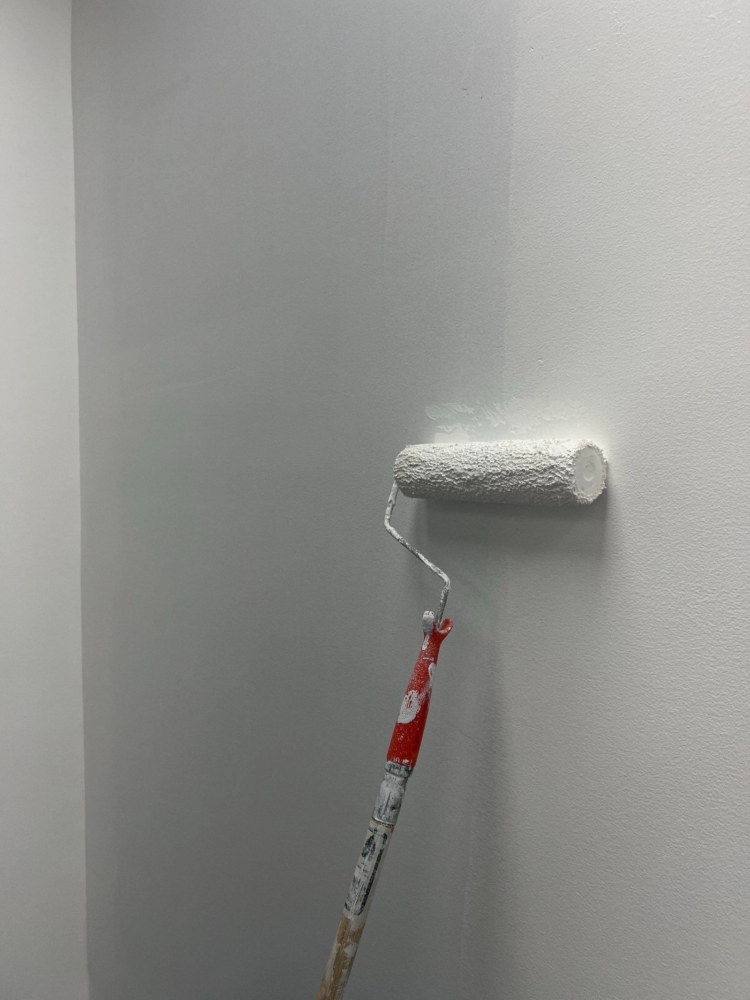
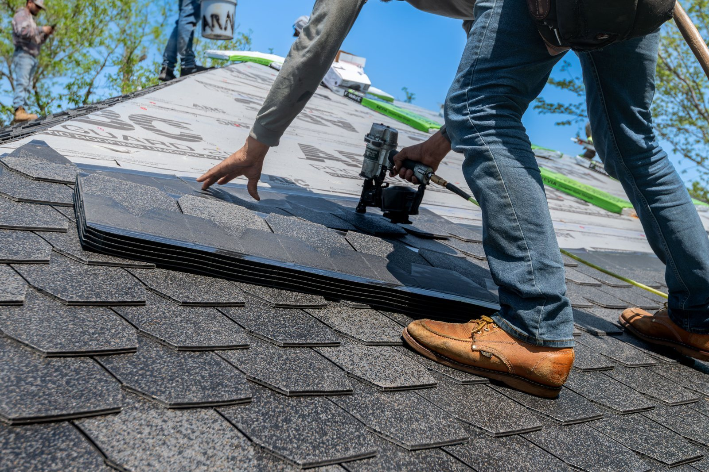
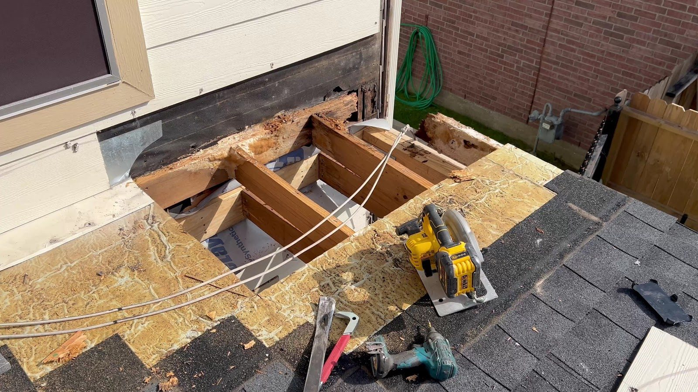
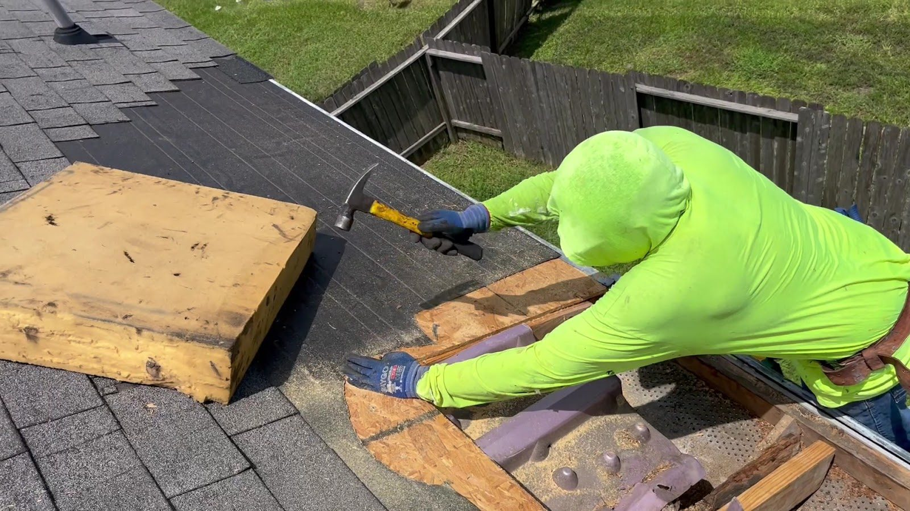
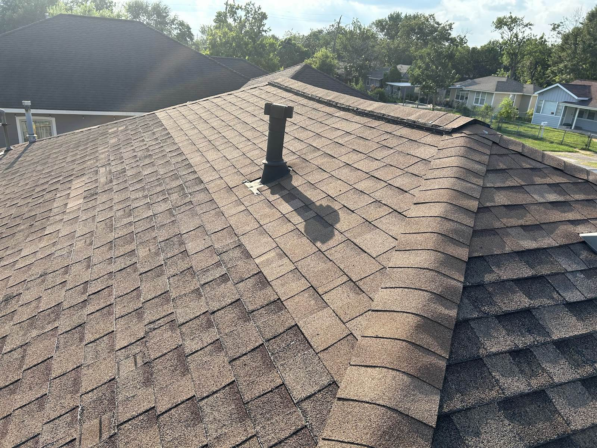
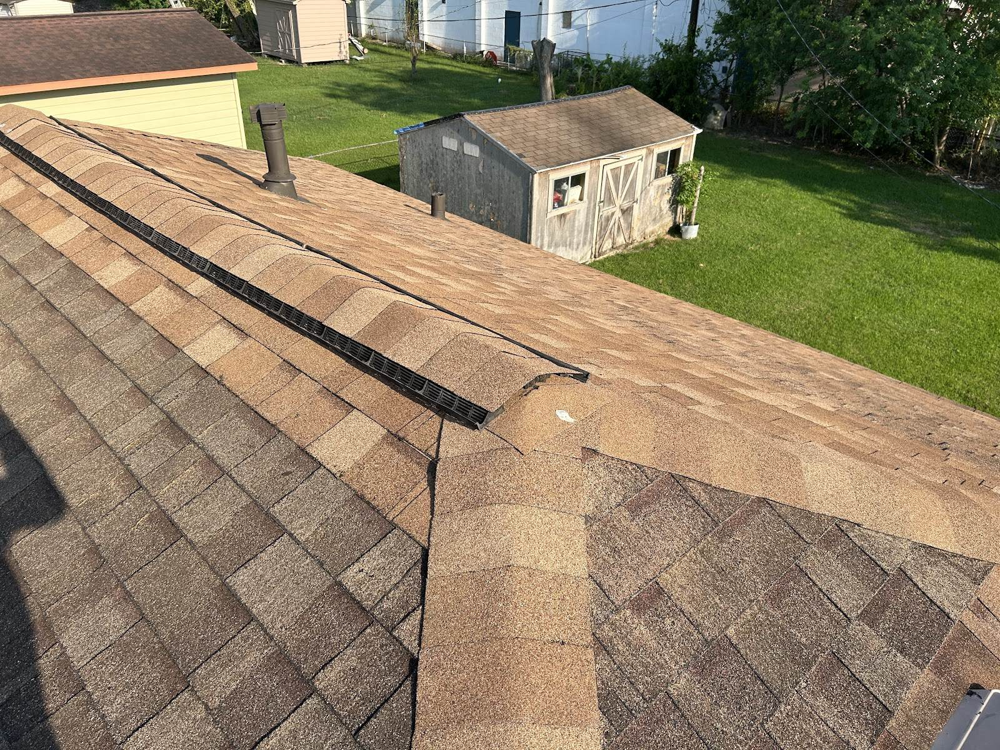
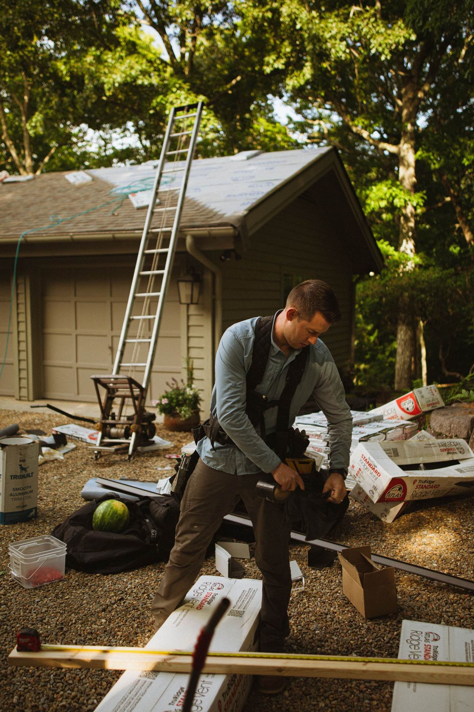
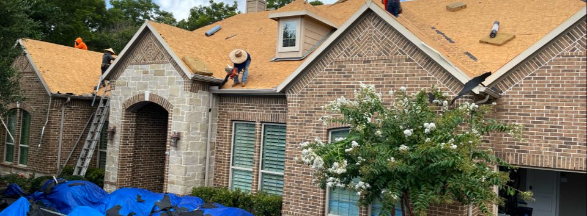

Note 03a
Drywall
An inside wall opened up for a roof repair gets closed back up. Drywall and painting sit on the same work order as the roof so the house is not left half-open.

Entry 01Roof repairsHouston, Texas
Roof repairs, new roofs, leak and shingle work, decking repairs, drywall, painting and power washing across east Houston. Send a photo from the ground and say where the water is coming in.
Entry 02The job, step by stepFive steps
01
We start at the ground and work up: what the shingles show, where the water is getting in, and how the decking looks from the ladder line. Reviewers on Google keep mentioning the inspection as the part that made the rest make sense.

02
Bad decking gets opened, not patched over from the top. You see the wood, you see what has to come out, and the scope is a fact rather than a guess. That is the photo below, mid-job.

03
Roof decking repair comes before shingles. Soft or rotted wood is cut out and replaced, the new boards are fastened, and only then does the roof take a new layer.

04
Leak repair and shingle repair are the same job read from the other side. Find where the water entered, replace what failed, refasten what lifts, and seal the edges that let it in.

05
Torn-out material, nails and debris come off the roof and out of the yard. Reviewers mention punctuality and before-and-after pictures. Ask for the after picture when you book and you will get one.
Entry 03More than roofsSame crew, same call

Note 03a
An inside wall opened up for a roof repair gets closed back up. Drywall and painting sit on the same work order as the roof so the house is not left half-open.

Note 03b
Interior and exterior painting, on its own or alongside the roof. Reviewers single out the thorough version of the job, so the edges and the cleanup are part of it.

Note 03c
Grime off a driveway, a walkway or a siding line before paint or roof work goes on. Booked as its own job, with its own scope.
Entry 04After BerylWhat the reviews mention
Hurricane Beryl put work on a lot of Houston roofs. The reviews people leave mention the repairs that came after it, and they mention before-and-after pictures of the work.
Those pictures are the part worth asking about. When you book, ask to see the roof as it was on the day we looked at it, and the same roof afterwards.
What reviewers mention
Every score on Google comes from people who were on a roof or in a room with water in it, so it is the shortest honest introduction we can give you.
Entry 05Before the ladder goes upFour answers
Put something under it and keep the room clear. Call or text and tell us where the water shows up and when it started. Water on a ceiling almost always entered somewhere above it, so the stain tells you there is a problem, not where it is. Leave the roof alone while it is wet.
A tarp is a stopgap, not a repair. Whether one makes sense depends on the roof, the pitch and what the weather is doing, so ask when you call and you will get a straight answer about whether it is worth doing. Water already inside the house is the more urgent part.
One photo from the ground showing the whole front of the house, and one from the attic or from the room below the stain. Add when the water started and whether it shows every time it rains. Those three things tell us more than a description does.
Call or text (346) 276-3350. Roof repairs, new roofs, decking, drywall and painting, power washing. Describe the job, the part of Houston you are in and the timing, and we will take it from there. Photos are welcome by text or email.
Entry 06ContactCall, text, email
Phone is the fastest way to reach us. Text works if you would rather send pictures while you are standing in the yard. Email suits plans, insurance paperwork or a list of addresses.